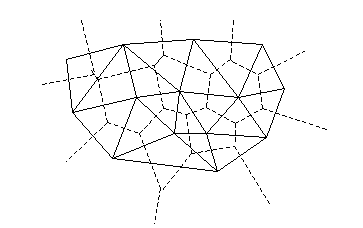
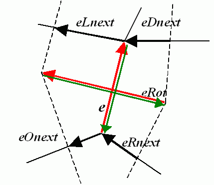

Planar Subdivisions (C API)¶
CvSubdiv2D¶
-
struct
CvSubdiv2D¶
Planar subdivision.
#define CV_SUBDIV2D_FIELDS() \
CV_GRAPH_FIELDS() \
int quad_edges; \
int is_geometry_valid; \
CvSubdiv2DEdge recent_edge; \
CvPoint2D32f topleft; \
CvPoint2D32f bottomright;
typedef struct CvSubdiv2D
{
CV_SUBDIV2D_FIELDS()
}
CvSubdiv2D;
Planar subdivision is the subdivision of a plane into a set of non-overlapped regions (facets) that cover the whole plane. The above structure describes a subdivision built on a 2D point set, where the points are linked together and form a planar graph, which, together with a few edges connecting the exterior subdivision points (namely, convex hull points) with infinity, subdivides a plane into facets by its edges.
For every subdivision, there is a dual subdivision in which facets and points (subdivision vertices) swap their roles. This means that a facet is treated as a vertex (called a virtual point below) of the dual subdivision and the original subdivision vertices become facets. In the figure below, the original subdivision is marked with solid lines and dual subdivision - with dotted lines.
OpenCV subdivides a plane into triangles using the Delaunay’s algorithm. Subdivision is built iteratively starting from a dummy triangle that includes all the subdivision points for sure. In this case, the dual subdivision is a Voronoi diagram of the input 2D point set. The subdivisions can be used for the 3D piece-wise transformation of a plane, morphing, fast location of points on the plane, building special graphs (such as NNG,RNG), and so forth.
CvQuadEdge2D¶
-
struct
CvQuadEdge2D¶
Quad-edge of a planar subdivision.
/* one of edges within quad-edge, lower 2 bits is index (0..3)
and upper bits are quad-edge pointer */
typedef long CvSubdiv2DEdge;
/* quad-edge structure fields */
#define CV_QUADEDGE2D_FIELDS() \
int flags; \
struct CvSubdiv2DPoint* pt[4]; \
CvSubdiv2DEdge next[4];
typedef struct CvQuadEdge2D
{
CV_QUADEDGE2D_FIELDS()
}
CvQuadEdge2D;
Quad-edge is a basic element of a subdivision containing four edges (e, eRot, reversed e, and reversed eRot):
CvSubdiv2DPoint¶
-
struct
CvSubdiv2DPoint¶
Point of an original or dual subdivision.
#define CV_SUBDIV2D_POINT_FIELDS()\
int flags; \
CvSubdiv2DEdge first; \
CvPoint2D32f pt; \
int id;
#define CV_SUBDIV2D_VIRTUAL_POINT_FLAG (1 << 30)
typedef struct CvSubdiv2DPoint
{
CV_SUBDIV2D_POINT_FIELDS()
}
CvSubdiv2DPoint;
- id
This integer can be used to index auxiliary data associated with each vertex of the planar subdivision.
CalcSubdivVoronoi2D¶
Calculates the coordinates of the Voronoi diagram cells.
-
C:
cvCalcSubdivVoronoi2D(CvSubdiv2D* subdiv)¶
-
Python:
cv.CalcSubdivVoronoi2D(subdiv) → None¶ Parameters: subdiv – Delaunay subdivision, in which all the points are already added.
The function calculates the coordinates of virtual points. All virtual points corresponding to a vertex of the original subdivision form (when connected together) a boundary of the Voronoi cell at that point.
ClearSubdivVoronoi2D¶
Removes all virtual points.
-
C:
cvClearSubdivVoronoi2D(CvSubdiv2D* subdiv)¶
-
Python:
cv.ClearSubdivVoronoi2D(subdiv) → None¶ Parameters: subdiv – Delaunay subdivision.
The function removes all of the virtual points. It
is called internally in
CalcSubdivVoronoi2D()
if the subdivision
was modified after the previous call to the function.
CreateSubdivDelaunay2D¶
Creates an empty Delaunay triangulation.
-
C:
cvCreateSubdivDelaunay2D(CvRect rect, CvMemStorage* storage)¶
-
Python:
cv.CreateSubdivDelaunay2D(rect, storage) → CvSubdiv2D¶ Parameters: - rect – Rectangle that includes all of the 2D points that are to be added to the subdivision.
- storage – Container for the subdivision.
The function creates an empty Delaunay
subdivision where 2D points can be added using the function
SubdivDelaunay2DInsert()
. All of the points to be added must be within
the specified rectangle, otherwise a runtime error is raised.
Note that the triangulation is a single large triangle that covers the given rectangle. Hence the three vertices of this triangle are outside the rectangle
rect
.
FindNearestPoint2D¶
Finds the subdivision vertex closest to the given point.
-
C:
cvFindNearestPoint2D(CvSubdiv2D* subdiv, CvPoint2D32f pt)¶
-
Python:
cv.FindNearestPoint2D(subdiv, pt) → point¶ Parameters: - subdiv – Delaunay or another subdivision.
- pt – Input point.
The function is another function that
locates the input point within the subdivision. It finds the subdivision vertex that
is the closest to the input point. It is not necessarily one of vertices
of the facet containing the input point, though the facet (located using
Subdiv2DLocate()
) is used as a starting
point. The function returns a pointer to the found subdivision vertex.
Subdiv2DEdgeDst¶
Returns the edge destination.
-
C:
cvSubdiv2DEdgeDst(CvSubdiv2DEdge edge)¶
-
Python:
cv.Subdiv2DEdgeDst(edge) → point¶ Parameters: edge – Subdivision edge (not a quad-edge).
The function returns the edge destination. The
returned pointer may be NULL if the edge is from a dual subdivision and
the virtual point coordinates are not calculated yet. The virtual points
can be calculated using the function
CalcSubdivVoronoi2D().
Subdiv2DGetEdge¶
Returns one of the edges related to the given edge.
-
C:
cvSubdiv2DGetEdge(CvSubdiv2DEdge edge, CvNextEdgeType type)¶
-
Python:
cv.Subdiv2DGetEdge(edge, type) → CvSubdiv2DEdge¶ Parameters: - edge – Subdivision edge (not a quad-edge).
- type –
Parameter specifying which of the related edges to return. The following values are possible:
- CV_NEXT_AROUND_ORG next around the edge origin (
eOnexton the picture below ifeis the input edge) - CV_NEXT_AROUND_DST next around the edge vertex (
eDnext) - CV_PREV_AROUND_ORG previous around the edge origin (reversed
eRnext) - CV_PREV_AROUND_DST previous around the edge destination (reversed
eLnext) - CV_NEXT_AROUND_LEFT next around the left facet (
eLnext) - CV_NEXT_AROUND_RIGHT next around the right facet (
eRnext) - CV_PREV_AROUND_LEFT previous around the left facet (reversed
eOnext) - CV_PREV_AROUND_RIGHT previous around the right facet (reversed
eDnext)
- CV_NEXT_AROUND_ORG next around the edge origin (
The function returns one of the edges related to the input edge.
Subdiv2DNextEdge¶
Returns next edge around the edge origin.
-
C:
cvSubdiv2DNextEdge(CvSubdiv2DEdge edge)¶
-
Python:
cv.Subdiv2DNextEdge(edge) → CvSubdiv2DEdge¶ Parameters: edge – Subdivision edge (not a quad-edge).
The function returns the next edge around the edge origin:
eOnext
on the picture above if
e
is the input edge).
Subdiv2DLocate¶
Returns the location of a point within a Delaunay triangulation.
-
C:
cvSubdiv2DLocate(CvSubdiv2D* subdiv, CvPoint2D32f pt, CvSubdiv2DEdge* edge, CvSubdiv2DPoint** vertex=NULL )¶
-
Python:
cv.Subdiv2DLocate(subdiv, pt) -> (loc, where)¶ Parameters: - subdiv – Delaunay or another subdivision.
- pt – Point to locate.
- edge – Output edge that the point belongs to or is located to the right of it.
- vertex – Optional output vertex double pointer the input point coincides with.
The function locates the input point within the subdivision. There are five cases:
- The point falls into some facet. The function returns
CV_PTLOC_INSIDEand*edgewill contain one of edges of the facet. - The point falls onto the edge. The function returns
CV_PTLOC_ON_EDGEand*edgewill contain this edge. - The point coincides with one of the subdivision vertices. The function returns
CV_PTLOC_VERTEXand*vertexwill contain a pointer to the vertex. - The point is outside the subdivision reference rectangle. The function returns
CV_PTLOC_OUTSIDE_RECTand no pointers are filled. - One of input arguments is invalid. A runtime error is raised or, if silent or “parent” error processing mode is selected,
CV_PTLOC_ERRORis returnd.
Subdiv2DRotateEdge¶
Returns another edge of the same quad-edge.
-
C:
cvSubdiv2DRotateEdge(CvSubdiv2DEdge edge, int rotate)¶
-
Python:
cv.Subdiv2DRotateEdge(edge, rotate) → CvSubdiv2DEdge¶ Parameters: - edge – Subdivision edge (not a quad-edge).
- rotate –
Parameter specifying which of the edges of the same quad-edge as the input one to return. The following values are possible:
- 0 the input edge (
eon the picture below ifeis the input edge) - 1 the rotated edge (
eRot) - 2 the reversed edge (reversed
e(in green)) - 3 the reversed rotated edge (reversed
eRot(in green))
- 0 the input edge (
The function returns one of the edges of the same quad-edge as the input edge.
SubdivDelaunay2DInsert¶
Inserts a single point into a Delaunay triangulation.
-
C:
cvSubdivDelaunay2DInsert(CvSubdiv2D* subdiv, CvPoint2D32f pt)¶
-
Python:
cv.SubdivDelaunay2DInsert(subdiv, pt) → point¶ Parameters: - subdiv – Delaunay subdivision created by the function
CreateSubdivDelaunay2D(). - pt – Inserted point.
- subdiv – Delaunay subdivision created by the function
The function inserts a single point into a subdivision and modifies the subdivision topology appropriately. If a point with the same coordinates exists already, no new point is added. The function returns a pointer to the allocated point. No virtual point coordinates are calculated at this stage.
Help and Feedback
You did not find what you were looking for?- Ask a question on the Q&A forum.
- If you think something is missing or wrong in the documentation, please file a bug report.

Table Of Contents
Previous topic
Next topic
Feature Detection and Description